NEXODOCS · PROPUESTA FUNCIONAL
Diseños conceptuales no implementados. Todos los datos son ficticios. No son capturas reales de la aplicación.
Referencia: c0c49ab más cambios locales · 17 noviembre 2026. Selecciona una imagen para ampliarla.
Descargar dossier PDF · 20 páginas · Documentación funcional y técnica
Compartir una versión exacta con una persona externa, sin abrirle el tenant.
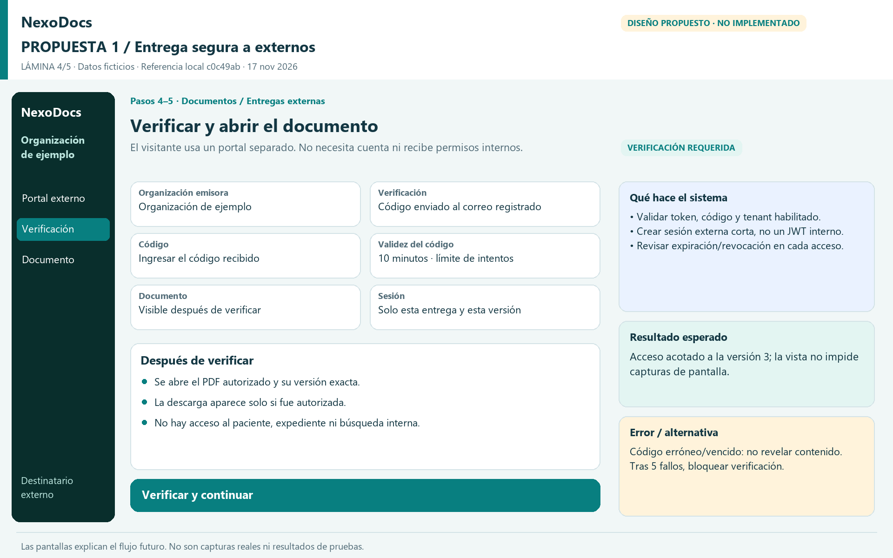
Recibir adjuntos institucionales y revisarlos antes de incorporarlos al archivo.
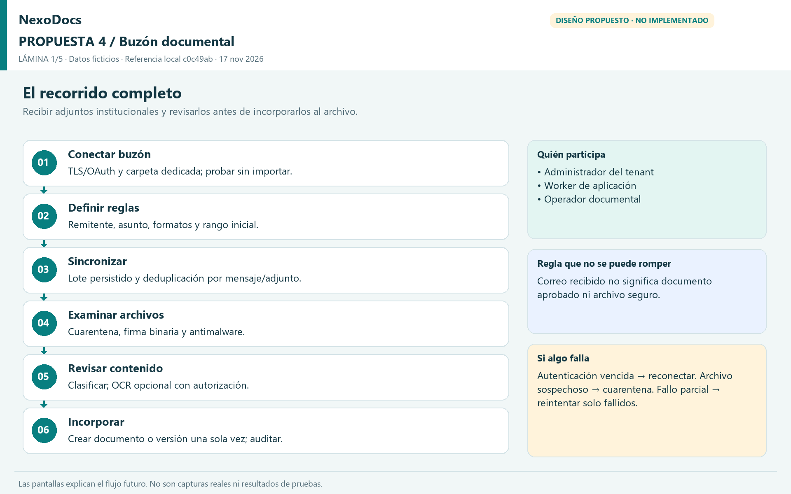
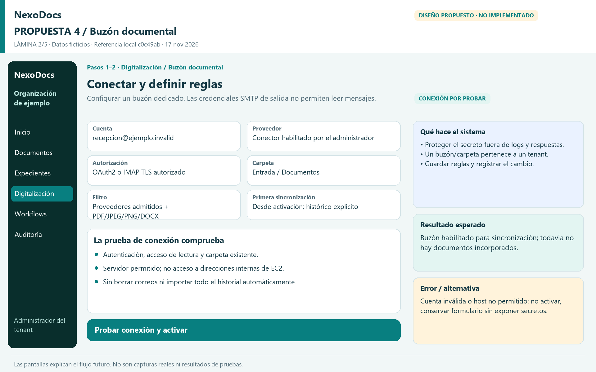
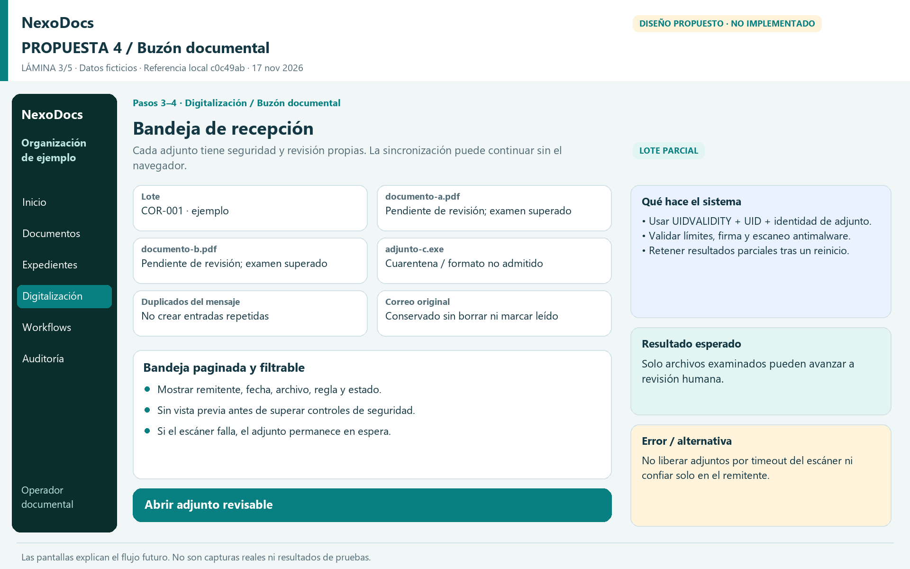
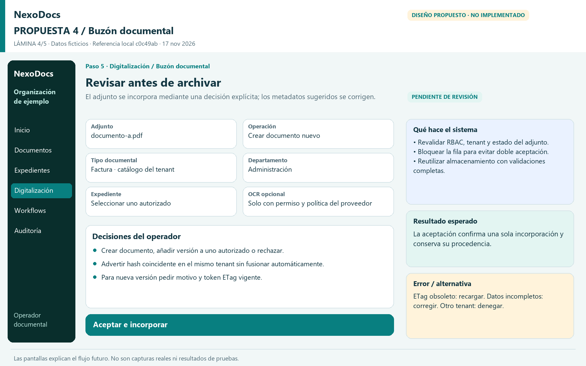
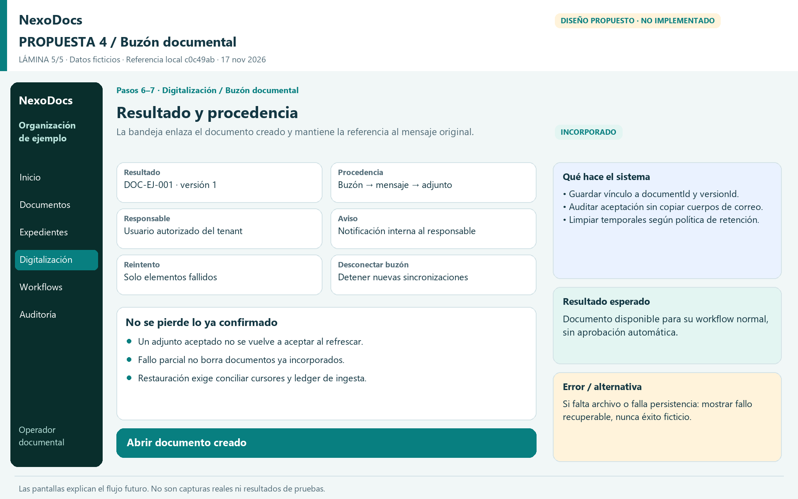
Localizar originales, registrar su entrega física y verificar su devolución.
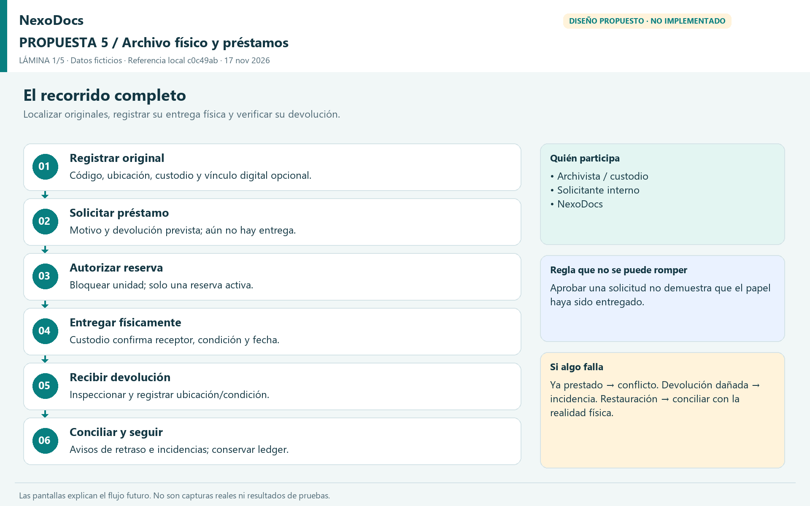
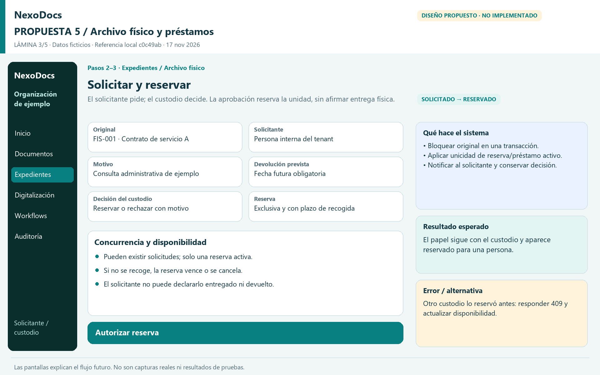
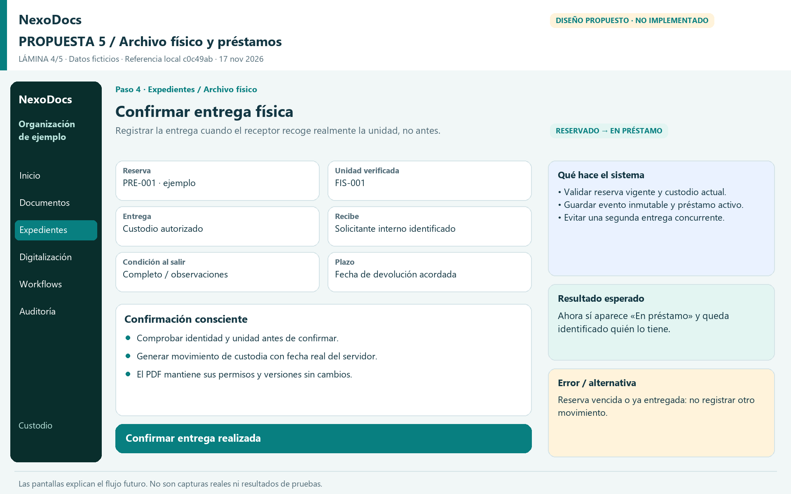
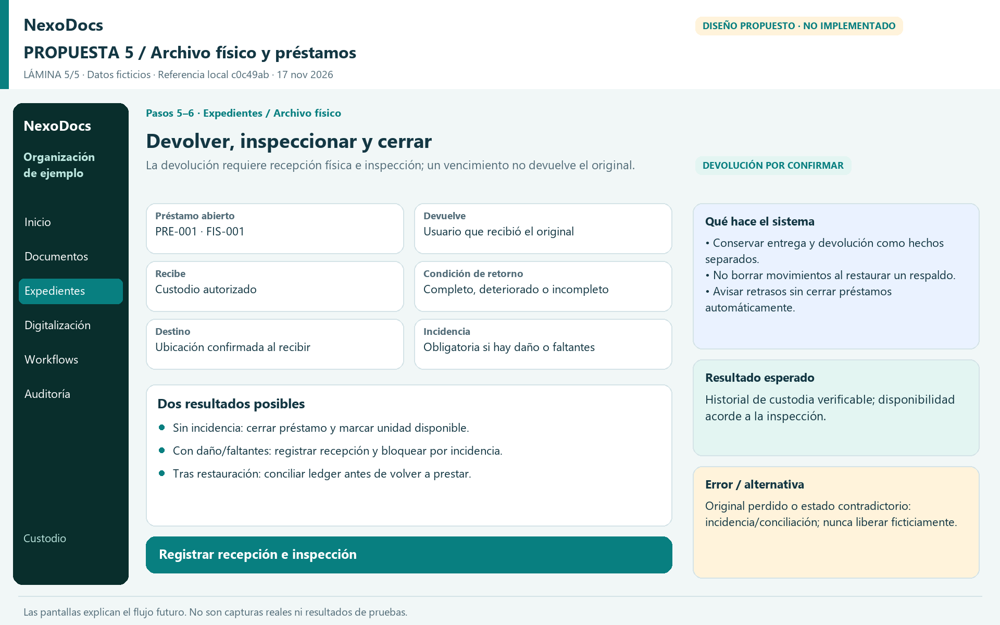
Traducir una versión, revisarla y publicar una copia derivada sin sustituir el original.
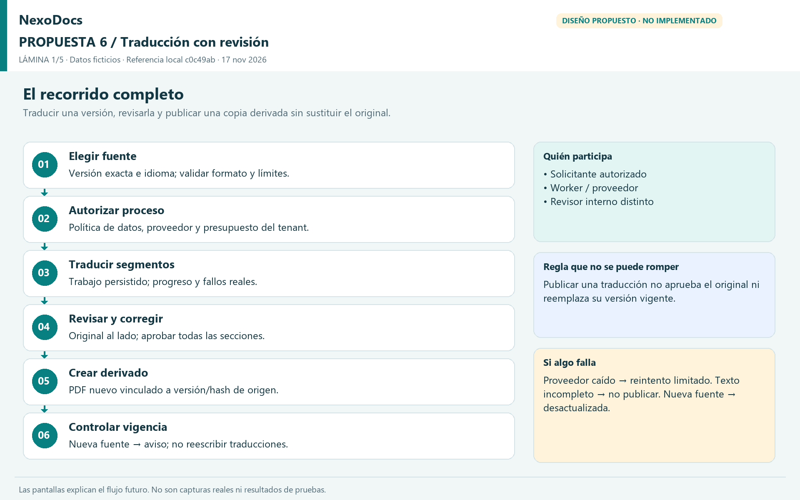
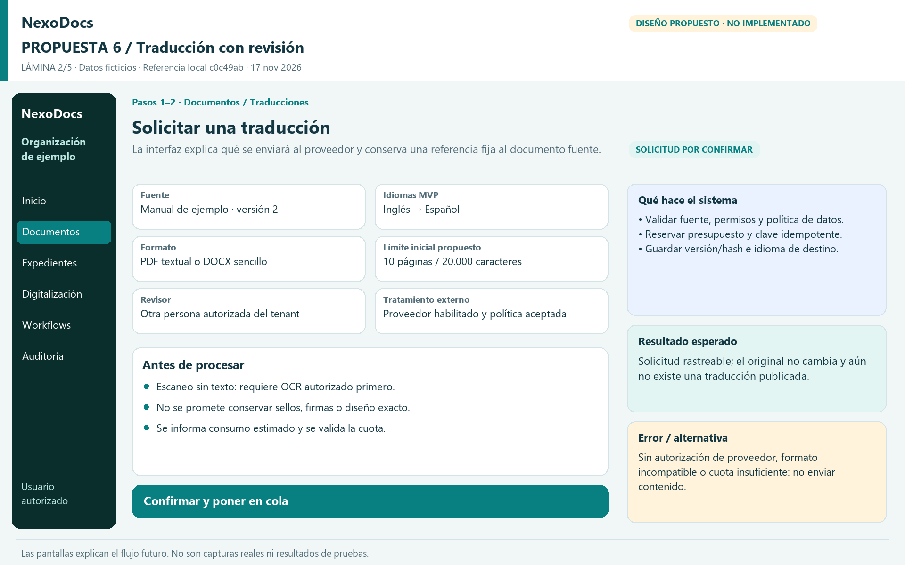
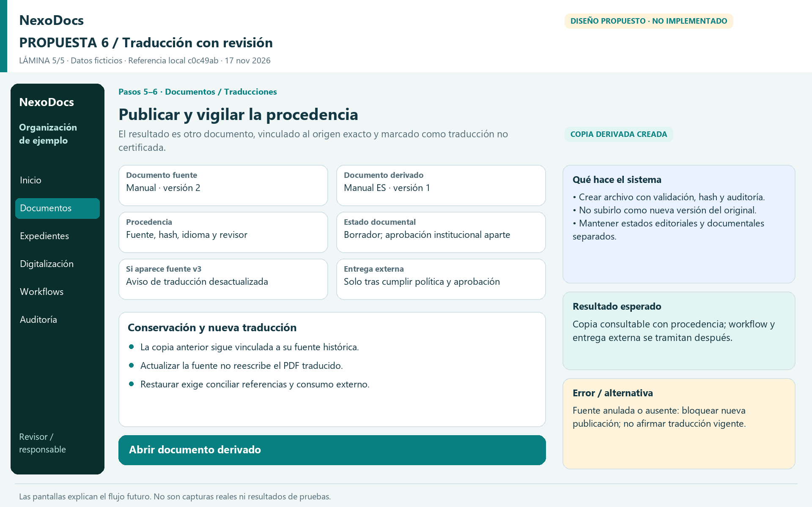